Platform adminSets up default alerts
Works on the platform team and looks after alerts for every sub-customer.
- Goal
- Set alerts up once and trust them.
- Pain point
- Can’t easily see who gets what.
In one line“Set it once, and it should just work.”
On a US customs platform, shipment updates depended on admins writing emails by hand, so customers had to chase updates themselves. I designed the notification system that now sends them automatically.
Beyond the screens
About a 13-minute read. Short on time? Read the turning point and the outcome.
Read the mistake I made, and what I changed ↓Work done at KlearNow.ai. Customer names and data are hidden or blurred for confidentiality.
249 shipment triggers (174 + 75), and none of them sent alerts automatically.
Research, flows, screens and demo reviews. Engineers built it.
Admin defaults, customer versions and personal settings.
A customer found alerts reaching every company under them.
The Platform admin sets a default, a sub-customer makes it their own, and the right people get the alert.
A shipment passes many checkpoints: filed, accepted, rejected, on hold, released. The platform calls each one a trigger. When something went wrong, nobody was told. Customers had to ask, and an admin wrote back by hand.
How might we tell the right people about the right event, without anyone writing an email by hand?
I wrote the documentation for the old module myself, step by step. Then I met the admins who used it every day. Together, these showed exactly where people got stuck. I did not speak to sub-customers before v1. That gap shows up later, at the turning point.
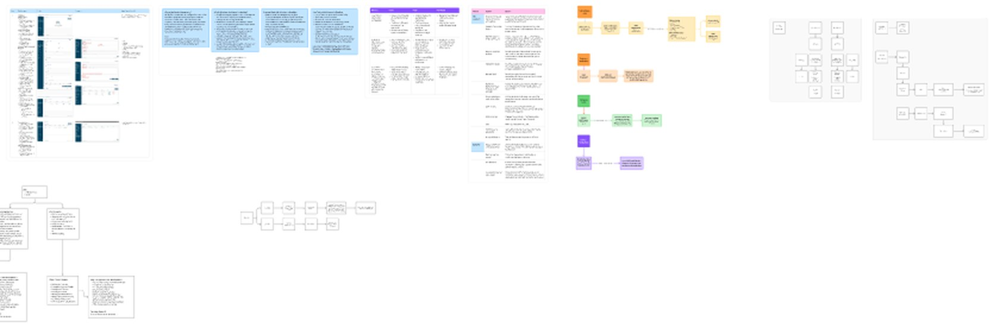
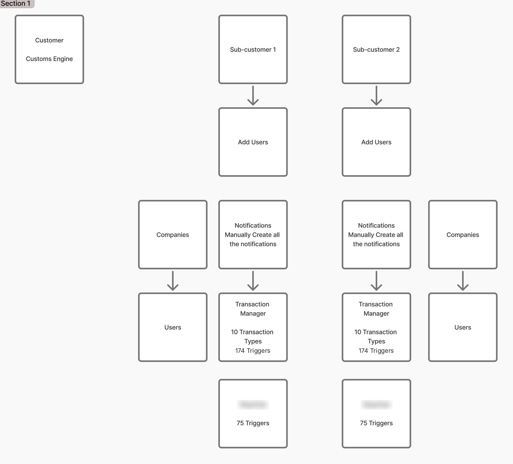
Works on the platform team and looks after alerts for every sub-customer.
In one line“Set it once, and it should just work.”
Manages shipments for its own companies, teams and partners.
In one line“Only my people should hear about my shipments.”
Different people needed control over different things. So instead of one giant settings page, I gave each of them their own level.
Creates one ready-made alert per trigger. Every sub-customer gets it from day one.
1Uses a default as it is, or makes its own, and chooses who receives it.
2Turns alerts on or off, by email, in the app, or both.
3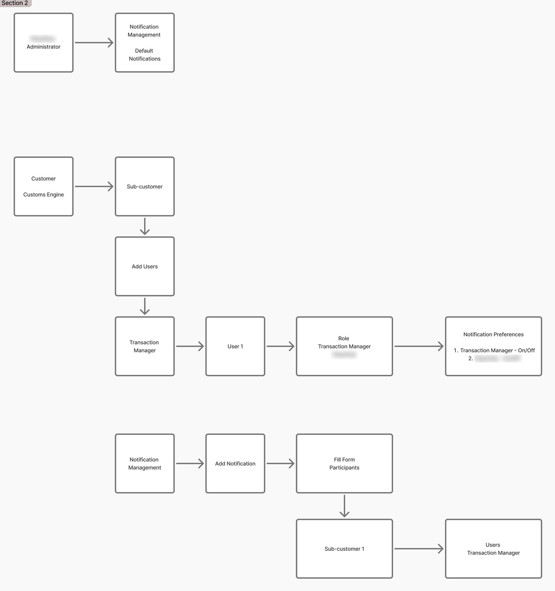
The platform admin writes one ready-made alert for each trigger. Every sub-customer receives it automatically, so nobody starts from nothing.
On day one there are no defaults. Instead of a blank table, the page says what to do next and points to the one button that starts it.
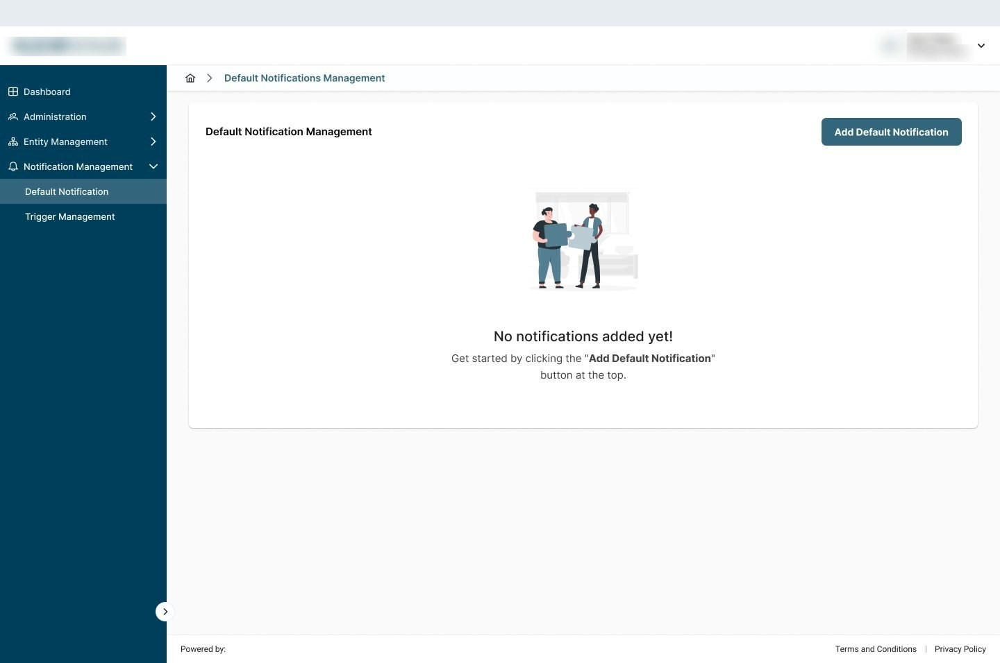
One form covers the whole alert, for every sub-customer.
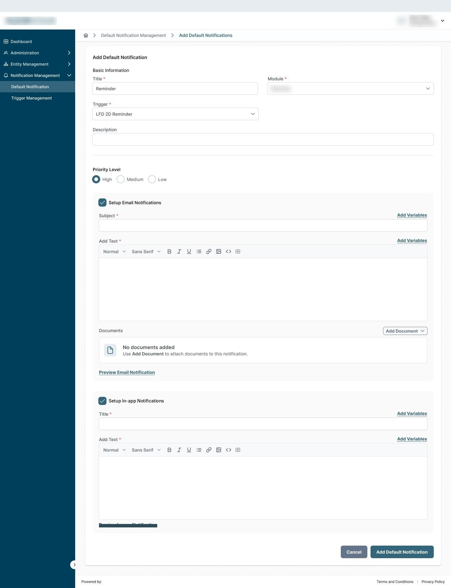
1234The preview shows the full email layout, with a clear placeholder wherever shipment details will go, so mistakes are caught before saving.
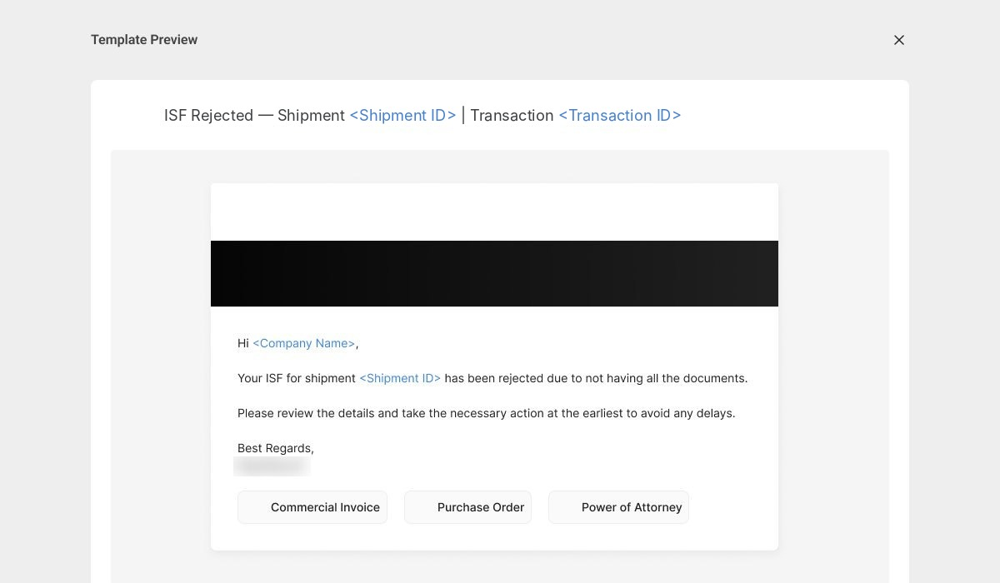
One table lists every default. A toggle switches one off without losing its setup. The status label follows the company's design system, which names the states differently from most products.
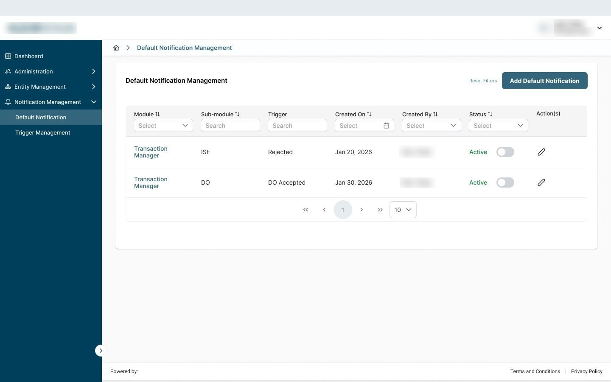
Sub-customers know their teams and partners best. They can use the admin's default as it is, or write their own. Either way, they choose exactly who receives it.
Pick the default made by the platform admin and use it directly.
Create a new version with their own words and details.
Sub-customers see every default the admin made for them.
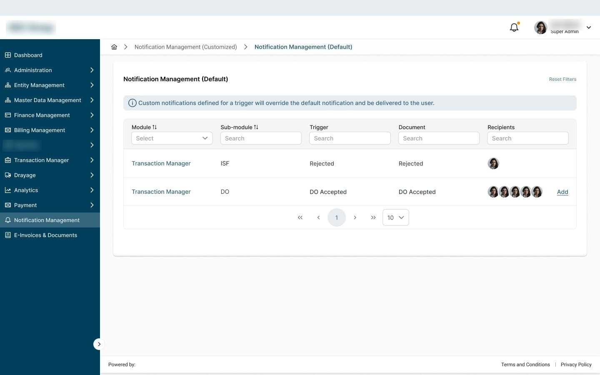
1Same form as the admin's, with three additions.
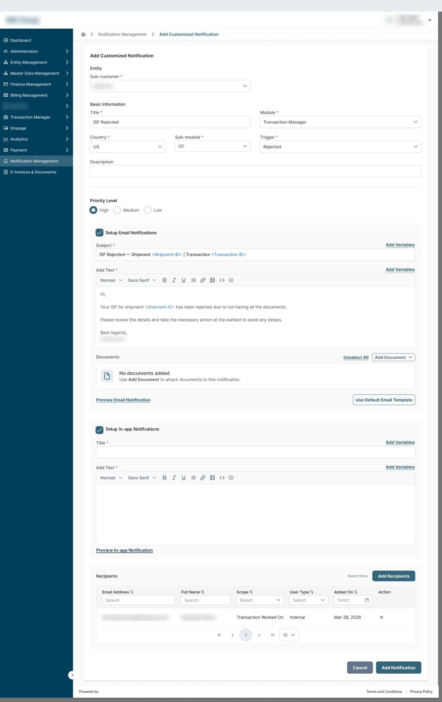
123Company users who sit under the sub-customer.
People not under the sub-customer who still need to know.
In v1, I designed recipients as a flat list of typed email addresses. I had not mapped how companies sit under a sub-customer, so an alert could not be scoped to one company, and everyone on the list heard about every company. My own sub-customer persona named this risk, and I still missed it in the model. A customer caught it when I demoed v1.
Alerts reached every company under the sub-customer, not only the one they were meant for.
Before any screen, I map who can see what: entity, then sub-customer, then company, then user. Every flow gets checked against that map. v2's company picker came straight out of this.
Drag to compare v1 and v2
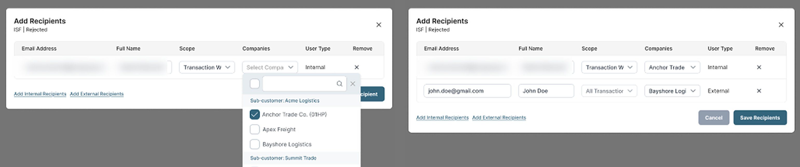
| Option 1 | Option 2 · chosen | |
|---|---|---|
| How it works | Separate buttons for internal and external | One “Add Recipients” button for everyone |
| User effort | Decide the type before picking a person | Just pick the person. The type is shown |
| Empty list | Nothing shown | Explains how to add the first person |
| Mistakes | No duplicate check | Warns if someone is already added |
With 249 triggers, too many alerts was a real risk. Each user decides what they receive, and a new in-app channel sits next to email.
Settings follow the same modules people already know.
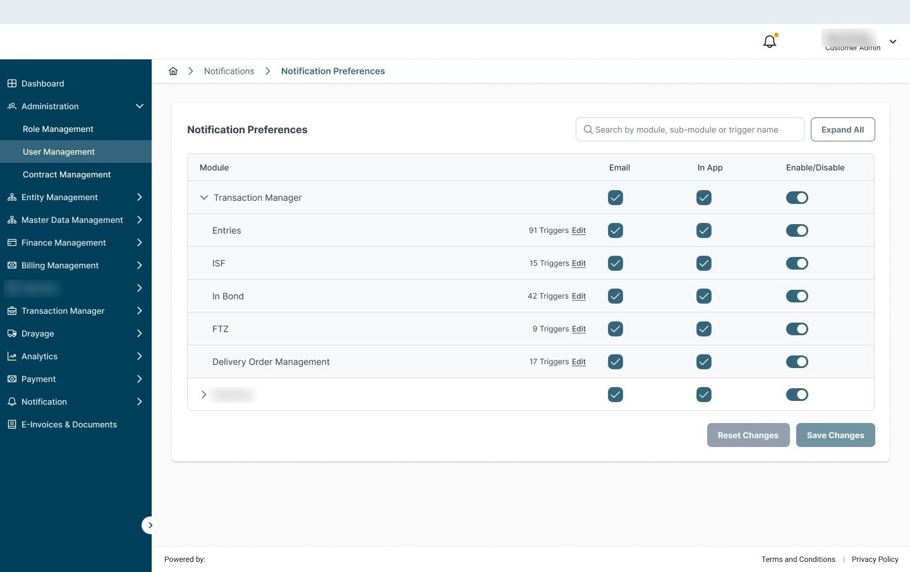
123Before, there was only email. Now a bell in the header shows recent alerts, sorted by time or priority.
Entry #KX-TM-00234 · ISF filing is 3 days overdue for the shipment arriving at Port of Los Angeles on Mar 02.
Entry #KX-TM-00241 · CBP placed a hold at Port of Long Beach. Upload the commercial invoice to release it.
Entry #KX-TM-00198 · CBP released the entry. Goods are cleared for delivery.
DO #KX-DO-00412 · The trucker accepted the pickup for Mar 04 at Terminal 3.
Useful alerts on day one. Change only what you need.
A custom alert replaces the default. No duplicates.
Shipment details are inserted with a button, not typed tags.
High, medium or low on every alert, so urgent ones stand out.
An alert is only useful if it reaches the person who acts on it. Learned at the turning point.
A good v1 is also about what you say no to. Two decisions shaped the scope.
Support tickets also needed notifications, but they follow a different flow and a different set of people. Adding them would have doubled the work.
I kept v1 focused on shipment alerts, the biggest pain for customers, and planned tickets for a later release.
My first idea asked each Transaction Manager user with a simple popup. Engineers pushed back: collecting and storing those answers reliably was hard. We argued it out. I listened to their constraint, and I also saw the popup would not scale as UX: a yes or no for each of 249 triggers is a lot to ask of anyone.
So I proposed a middle ground: move the choice into a Recipients section. The sub-customer picks who gets each alert in one place, and engineers get clean data to work with.
By May 2026 the feature was live. Admins stopped writing update emails by hand, and customers said they no longer had to chase anyone for updates. The numbers below are early estimates, so most of the evidence here is what customers told us.
to set up a sub-customer's alerts. 20 to 25 minutes before, 7 to 10 after
update emails a week that admins used to write by hand. They now go out on their own
of customers with the notification role started using alerts, and every platform admin created default alerts
Setup times are early estimates from the first setups after launch. The adoption figure (about 9–12% of customers with the notification role) is from the first 2–3 months after launch. It counts customers who had been given the notification role, since only they can set alerts up. It matched what the PM expected for a first release. I saw it in the product and checked it with the PM; it is an estimate, not tracked analytics.
“This is great. Now there's no need to take updates from anyone else.”
Sub-customer, after launch
“The status is transparent. There's almost no dependence on others.”
Customer feedback, after launch
Writing down the old flow showed what was broken and what already worked.
Three clear levels made a big feature easy to explain and to build.
I missed company scoping in v1. Now I map who can see what before I draw a single screen.
| Metric | How to track it | Target |
|---|---|---|
| Adoption | Customers with the notification role who have at least one active alert. About 9–12% so far | Most active sub-customers in 3 months |
| Fewer manual emails | Update emails sent by hand by admins. 3 to 4 a week before | Stay at zero |
| Setup time | Time to set up a sub-customer's alerts. Now 7 to 10 min | Under 5 min with more defaults |
| Right people, less noise | Users who turn alerts off, and alerts sent to the wrong company | Under 10% opt-out, zero wrong sends |
My admin persona's pain point was "can't easily see who gets what", and v1 didn't solve it. The override works in the backend, but nothing on screen shows it. This is the view I'm proposing next: one trigger, every company, and where each alert comes from.
Concept Not shipped. A proposal for the next release.
How the work ran, from January to launch in May 2026. I led every stage. Engineers built the feature and a PM managed the tickets.
Wrote the documentation for the old module and compared what was planned, designed and built.
Met the admins twice to hear what slowed them down. Turned it into 2 personas and goals.
Listed every feature idea with a reason, and shaped the three-level system.
Mapped every flow as a chart, then designed the v1 screens.
Demoed v1 to an admin and a customer, then shared the prototype with stakeholders to try for themselves.
What changed: the customer found alerts going to every company under them, so I redesigned recipients in v2.
Worked with engineers until the feature was built and live.
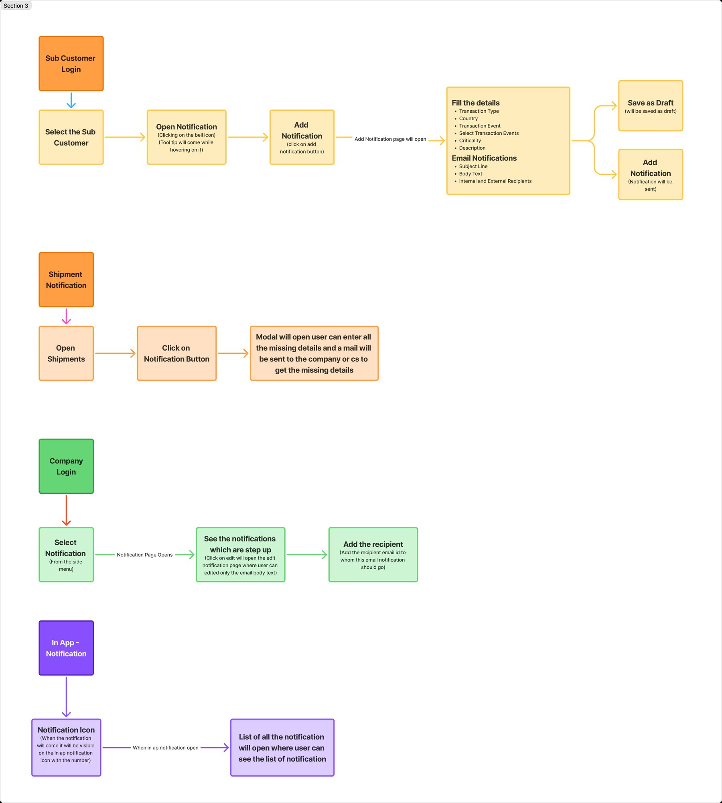
Thanks for reading.